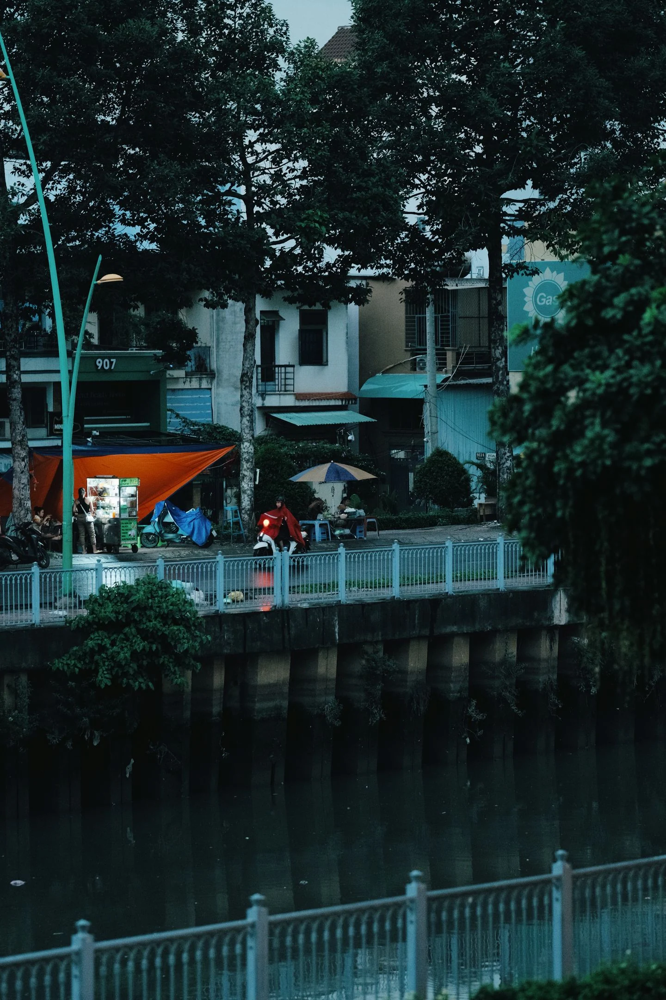

ЖИВОЙ АРХИВ / 08 ЗАПИСЕЙУ каждого
У каждого
города есть
свой голос.
Слушайте места, которых рядом нет. Демонстрационные аудиозарисовки, синтезированные в браузере.
Исследовать карту ↓
ЗВУКОВАЯ КАРТАЧто слышно
Что слышно
прямо сейчас
ПРЕСНЯ
БАСМАННЫЙ
ХАМОВНИКИ
MOSCOW / 1:24000
JUL 07 · 14:32
JUL 07 · 14:32
АУДИОЗАРИСОВКИПоследние
Последние
добавления
Загружаем архив…
Город меняется быстрее,
чем мы успеваем его услышать.
EchoMap иллюстрирует идею архива повседневных звуков: скрип старого трамвая, двор после школы, дождь по стеклянной крыше. Не достопримечательности — память места.
11.8минут городской
памяти в архиве
памяти в архиве